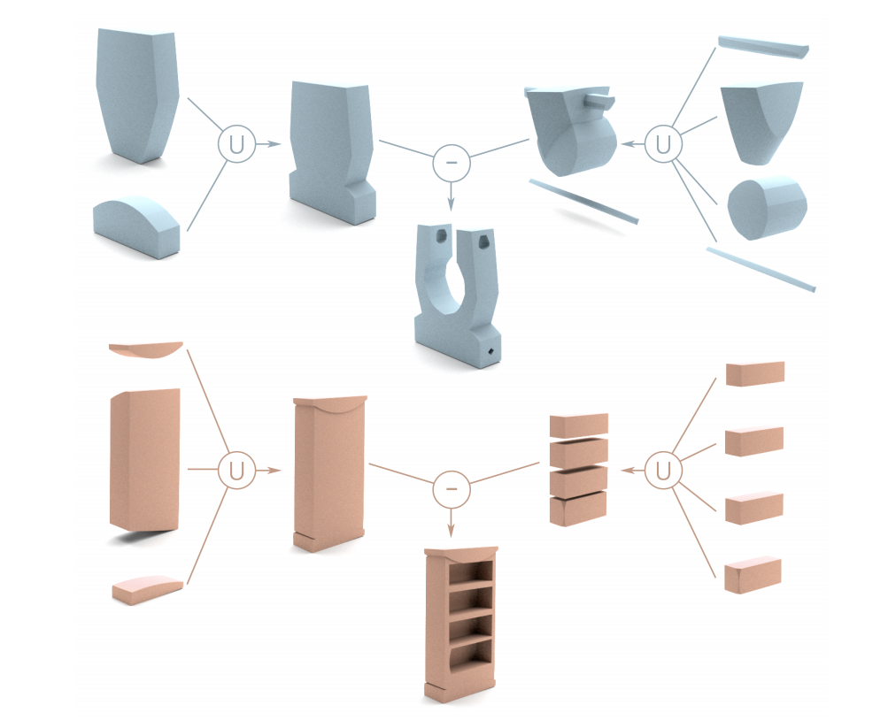
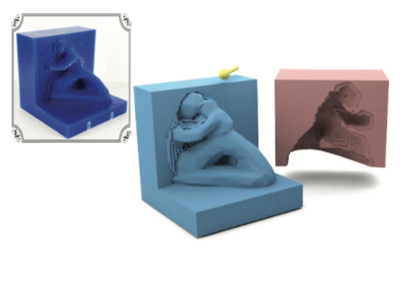
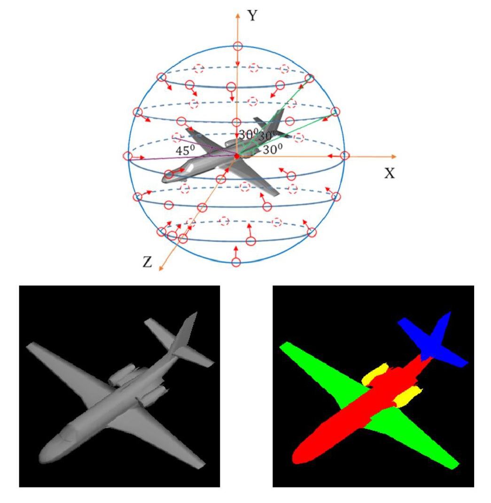
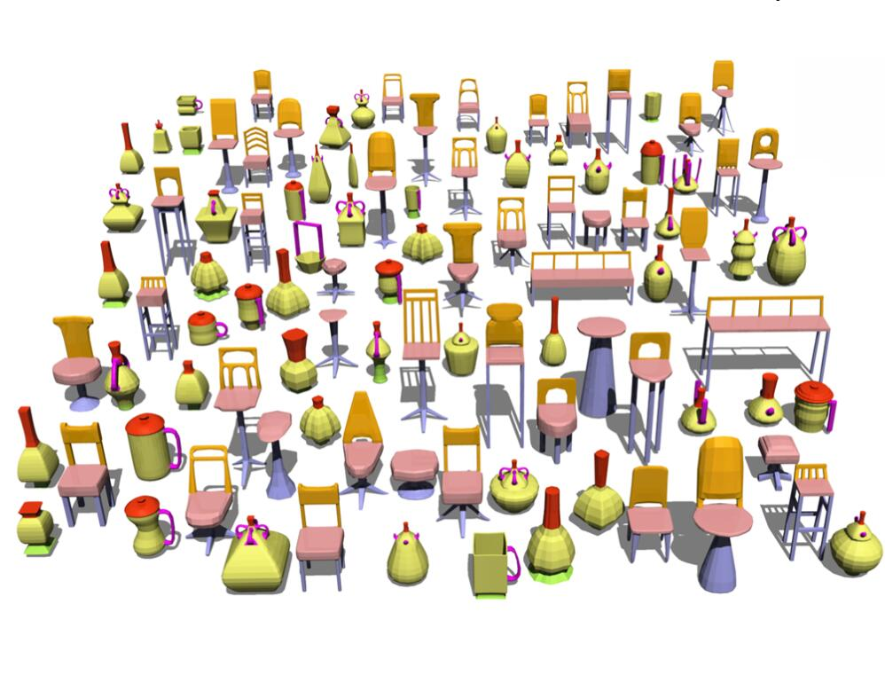

Publications

Fenggen Yu, Zhiqin Chen, Manyi Li, Aditya Sanghi, Hooman Shayani, Ali Mahdavi-Amiri and Hao(Richard) Zhang.
CAPRI-Net: Learning Compact CAD Shapes with Adaptive Primitive Assembly.
[Paper], [Project Page], Accepted to [CVPR 2022]
We introduce CAPRI-Net, a neural network for learning compact and interpretable implicit representations of 3D computer-aided design (CAD) models, in the form of adaptive primitive assemblies.

Jiongchao Jin, Arezou Fatemi, Wallace Lira, Fenggen Yu, Biao Leng, Rui Ma, Ali Mahdavi-Amiri and Hao(Richard) Zhang.
RaidaR: A Rich Annotated Image Dataset of Rainy Street Scenes.
[Paper], Second ICCV Workshop on Autonomous Vehicle Vision (AVVision), 2021
We introduce RaidaR, a rich annotated image dataset of rainy street scenes, to support autonomous driving research. The new dataset contains the largest number of rainy images (58,542) to date, 5,000 of which provide semantic segmentations and 3,658 provide object instance segmentations.

Ali Mahdavi-Amiri, Fenggen Yu, Haisen Zhao, Adriana Schulz and Hao(Richard) Zhang.
VDAC: Volume Decompose-and-Carve for Subtractive Manufacturing.
Accepted to SIGGRAPH ASIA 2020|[Paper]|[Project page]
We introduce carvable volume decomposition for efficient 3-axis CNC machining of 3D freeform objects, where our goal is to develop a fully automatic method to jointly optimize setup and path planning.

Fenggen Yu, Kun Liu, Yan Zhang, Chenyang Zhu, Kai Xu.
PartNet: A Recursive Part Decomposition Network for Fine-grained and Hierarchical Shape Segmentation.
Accepted to CVPR 2019|[Paper]|[Code & data]
Deep learning approaches to 3D shape segmentation are typically formulated as a multi-class labeling problem. Existing models are trained for a fixed set of labels, which greatly limits their flexibility and adaptivity. We opt for topdown recursive decomposition and develop the first deep learning model for hierarchical segmentation of 3D shapes, based on recursive neural networks.

Fenggen Yu, Yan Zhang, Kai Xu, Ali Mahdavi-Amiri and Hao(Richard) Zhang.
Semi-Supervised Co-Analysis of 3D Shape Styles from Projected Lines.
Accepted to ACM Transactions on Graphics (to be presented at SIGGRAPH 2018), 37(2)|[Paper]|[Code & data].
We present a semi-supervised co-analysis method for learning 3D shape styles from projected feature lines, achieving style patch localization with only weak supervision. Given a collection of 3D shapes spanning multiple object categories and styles, we perform style co-analysis over projected feature lines of each 3D shape and then backproject the learned style features onto the 3D shapes.

PanPan Shui, Pengyu Wang, Fenggen yu, Bingyang Hu, Yuan Gan, Kun Liu, Yan Zhang.
3D Shape Segmentation Based on Viewpoint Entropy and Projective Fully Convolutional Networks Fusing Multi-view Features.
Accepted to ICPR 2018|[Paper].
This paper introduces an architecture for segmenting 3D shapes into labeled semantic parts. Our architecture combines viewpoint selection method based on viewpoint entropy, multi-view image-based Fully Convolutional Networks (FCNs) and graph cuts optimization method to yield coherent segmentation of 3D shapes.

Pengyu Wang*, Yuan Gan*, Panpan Shui, Fenggen Yu, Yan Zhang, Songle Chen, Zhengxing Sun.
3D Shape Segmentation via Shape Fully Convolutional Networks.
Accepted to Computer & Graphics, Vol 70, Feb 2018.|[Paper]|[Code & data].
We design a novel fully convolutional network architecture for shapes, denoted by Shape Fully Convolutional Networks (SFCN). 3D shapes are represented as graph structures in the SFCN architecture, based on novel graph convolution and pooling operations, which are similar to convolution and pooling operations used on images.